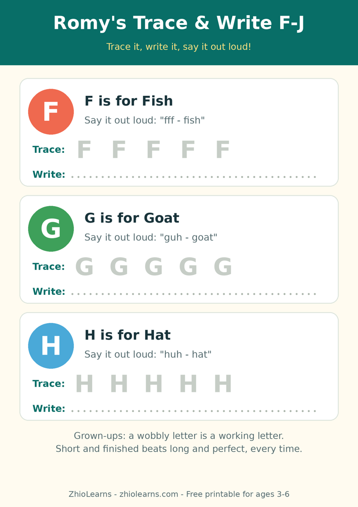

A Is for the Apple on Your Table: Why Everyday Words Teach Letters Best
Every alphabet poster in the world will tell your child that A is for apple. What the poster cannot do is put the apple in their hand — cold from the fridge, with the little sticker they are determined to peel off before breakfast.
That difference sounds small. For a three- or four-year-old, it is most of the game. A letter on its own is just a shape, and shapes are forgettable. But a letter attached to a word your child already says twenty times a day — apple, bath, dog, park — arrives with the word's whole life attached to it: the taste, the place, the people. The letter stops being homework and starts being a label for something real.
Familiar first, abstract later
Young children learn in a stubborn order: real things first, pictures of real things second, and symbols a distant third. That is not a flaw in the child; it is how a new brain files information. When we start with the symbol — here is A, say A, remember A — we are asking them to do the hardest step first.
Start with the familiar word instead and the order fixes itself. Your child already owns the word banana. Showing them that banana begins with B gives the new shape an address in a neighbourhood they know. One familiar word will not teach the alphabet, of course. But a house and a park full of them, named out loud over weeks, quietly will.
The 30-second version: one moment, three things
You do not need a new activity for this. You need one ordinary moment you already have — breakfast is the easiest — and about thirty seconds inside it:
- Name three things, slowly. Not a list to memorise — just talk with a little more care than usual. "There's your toast. And the jam. And your apple."
- Stretch the first sound, just a touch. "A-a-apple." Not a drill voice, not a test — the way you'd point out something interesting on a walk. "L-look, a l-leaf."
- Then stop. No "so what letter is that?" afterwards. The naming itself is the lesson. Quizzing turns a warm moment into an exam, and children can tell the difference instantly.
Bath time works the same way (bubbles, boat, duck), and so does the walk to the park (leaf, light, dog — the dog will be named with the most enthusiasm, every time). Pick whichever moment is calmest in your house. One moment a day is plenty; two is a bonus, never a requirement.
For families growing English at home
If English is not the only language in your kitchen, this approach has a quiet extra gift: it grows vocabulary and letters at the same time, in the same thirty seconds. Name the thing in both languages if that is natural in your family — "apple… seeb… apple" — and let the letter belong to the English word without making a ceremony of it. Children are far better at holding two names for one thing than adults give them credit for. What they need is repetition inside real life, not a rule about which language comes first.
What to do when they name it wrong
They will call the pear an apple, proudly, in the middle of the grocery store. Good. That means they are sorting the world into kinds — round fruit, breakfast fruit — which is exactly the thinking reading will later need. The reply that keeps it light:
Say: "Close — that one's a pear! Pear starts with P. Apple, pear — both live in our fruit bowl."
Skip: correcting the letter sound mid-sentence every single time. One gentle model is enough; joy first, accuracy follows it home.
Give it a few weeks of breakfasts and bath times and you will hear it: your child naming things with the first sound stretched out, all on their own, showing off to nobody in particular. That is a child who has started to hear how words are built. Letters have somewhere to land now.
The book built out of your kitchen
Romy's Alphabet – Everyday Edition was made on exactly this principle. Every letter is paired with everyday words and pictures from a young child's real life — home, food, animals, the park — so the book feels less like a lesson and more like a walk through a day your child recognises. It is made for ages 3–5, and families tell us it earns a special place with little ones growing English vocabulary word by familiar word.
Read a page or two at breakfast, name the real things on your own table, and let the book and the kitchen teach together. And when little hands are ready to move from naming letters to forming them, the free printable below is the natural next step.
🖨️ Free printable: Romy's Trace & Write F–J

Trace F, G, H, I and J, say each sound out loud, then write all five letters on your own. Two pages, ages 3–6, free, no sign-up needed to print it.
Download the free printable (PDF)📚 Today's book
Find Romy's Alphabet – Everyday Edition and Romy's other books in our little shop — and read Romy's Alphabet Picnic free in the Storytime section.
See Romy's books →🌿 More from the Parent Corner
Got a little hunter who would rather search than sit? Our previous article turns one letter a day into a treasure hunt around your home.
Put the Flashcards Away →